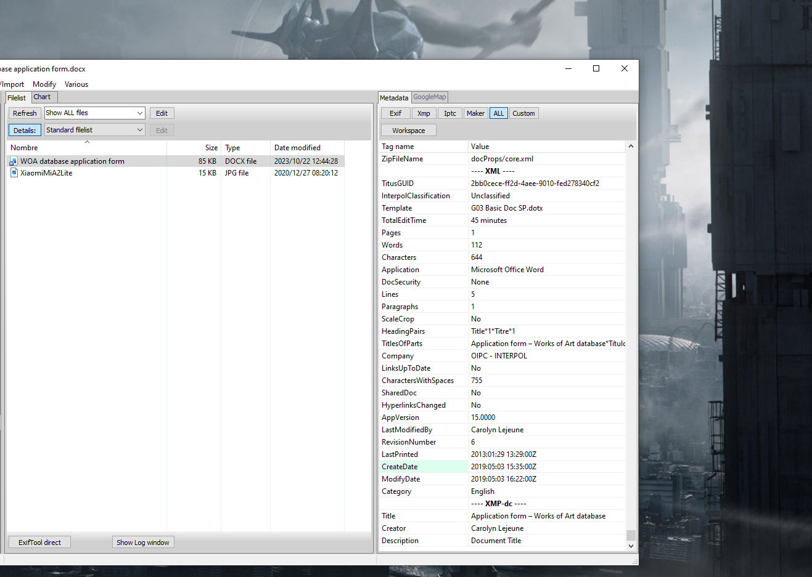
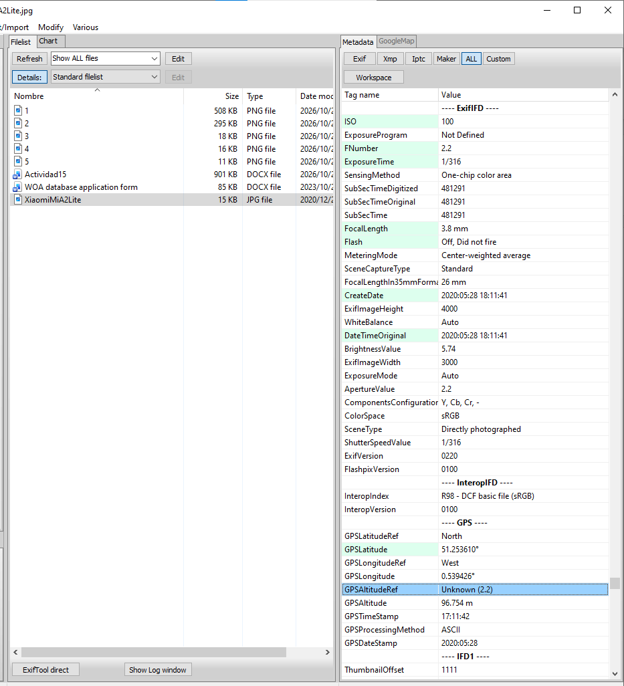
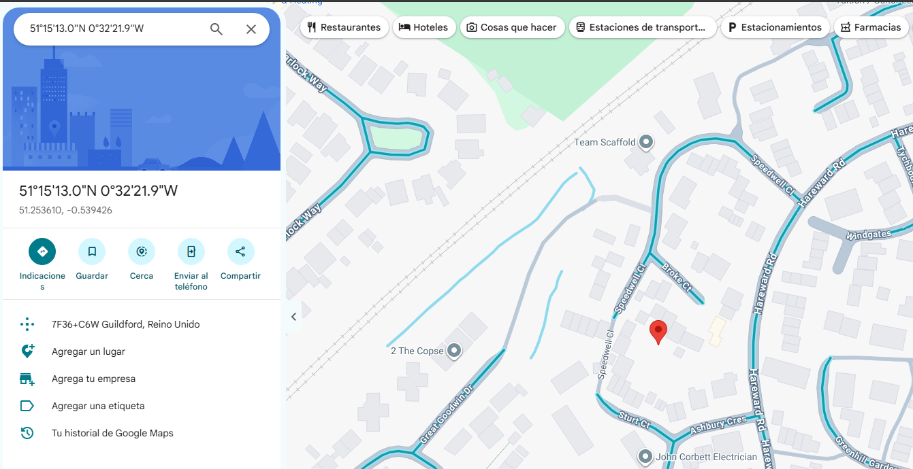
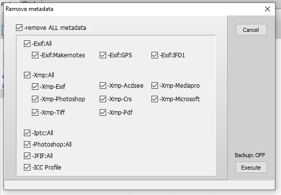
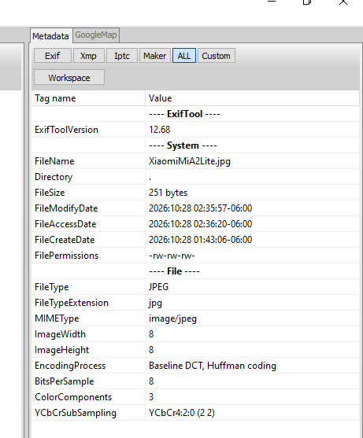

Actividad 15: Análisis de Metadatos con ExifTool
Reporte Original
Documentación de la actividad en formato digital // Extensión: .pdf
¿Qué son los Metadatos?
Los metadatos son "datos sobre los datos". Archivos como documentos y fotografías almacenan información oculta sobre su creación, autores, software utilizado, fechas de edición e incluso coordenadas geográficas precisas (GPS). Su análisis es vital en la informática forense para rastrear orígenes y probar la autenticidad de un fichero digital.
Objetivo de la Evaluación
Extraer e interpretar los metadatos ocultos en un documento de Word (.docx) y una fotografía (.jpg) utilizando la herramienta ExifTool. Posteriormente, mapear las coordenadas GPS obtenidas de la imagen y realizar un proceso de sanitización (eliminación completa) de metadatos para preservar la privacidad del archivo.
Terminal de Análisis Forense
Extracción y Análisis de Resultados
> Parte I. Documento Word
Target: WOA database application form.docx
| Pregunta de Análisis | Valor Extraído |
|---|---|
| ¿Cómo categorizó el archivo INTERPOL? | Unclassified |
| ¿Qué template fue utilizado para la elaboración del archivo por parte de INTERPOL? | G03 Basic Doc SP.dotx |
| ¿Cuál fue el tiempo total de edición del fichero? | 45 minutos |
| Identifique la Compañía propietaria del fichero. | OIPC - INTERPOL |
| ¿Quién realizó la última modificación del fichero? | Carolyn Lejeune |
| ¿Cuál fue la fecha de creación del fichero en investigación? | 2019:05:03 15:35:00Z |
| De acuerdo al análisis de metadatos del fichero de INTERPOL, identifique el creador del mismo. | Carolyn Lejeune |
> Parte II. Imagen Fotográfica
Target: XiaomiMiA2Lite.jpg
| Pregunta de Análisis | Valor Extraído |
|---|---|
| ¿Cuál fue la apertura ISO utilizada? | 100 |
| ¿Cuál es la longitud focal de la cámara con la que fue capturada la imagen? | 3.8 MM |
| ¿Señale si se utilizó la captura con Flash para obtener la imagen? | Off, Did not fire |
| Señale la fecha de creación del archivo. | 2020:05:28 18:11:41 |
| Identifique los datos de ubicación GPS y señale el lugar exacto dónde la fotografía fue tomada. | Lat: 51.253610° N Lon: 0.539426° W Coord: 51.253610, -0.539426 Guildford, Surrey, Reino Unido |
Procedimiento Forense y de Sanitización
Análisis de Metadatos Documentales
Se utilizó la interfaz gráfica de ExifTool para examinar el documento de Word WOA database application form.docx. El análisis reveló datos corporativos (OIPC - INTERPOL), tiempos de edición y la identidad de la creadora (Carolyn Lejeune).

Análisis de Metadatos Fotográficos
Se repitió el análisis apuntando ahora al archivo XiaomiMiA2Lite.jpg. La extracción reveló metadatos críticos como el hardware utilizado, el uso del flash y las coordenadas precisas (GPS Latitude/Longitude) incrustadas al momento de tomar la fotografía.

Geolocalización a partir de Fotografía (OSINT)
El análisis de la imagen expuso las coordenadas GPS exactas. Como la longitud indicó referencia Oeste (West), el valor se ingresó con signo negativo en Google Maps: 51.253610, -0.539426. Las coordenadas dirigieron a una zona residencial en Guildford, Surrey, Reino Unido.

Proceso de Sanitización de Datos
Para eliminar los metadatos expuestos, se seleccionó la imagen en ExifTool y mediante el menú superior se accedió a Modify > Remove metadata....

Ejecución del Borrado Total
En la ventana emergente, se marcó explícitamente la casilla -remove ALL metadata para asegurar la purga completa de datos Exif, Xmp, GPS e IPTC. Posteriormente, se presionó el botón Execute.

Verificación de Sanitización Exitosa
Al recargar el archivo en la herramienta, se comprobó que todos los metadatos de autoría, ubicación y hardware habían desaparecido. Únicamente se conservaron los metadatos de "Sistema" (tamaño, permisos y tipo MIME), obligatorios para que el sistema operativo reconozca el archivo.
